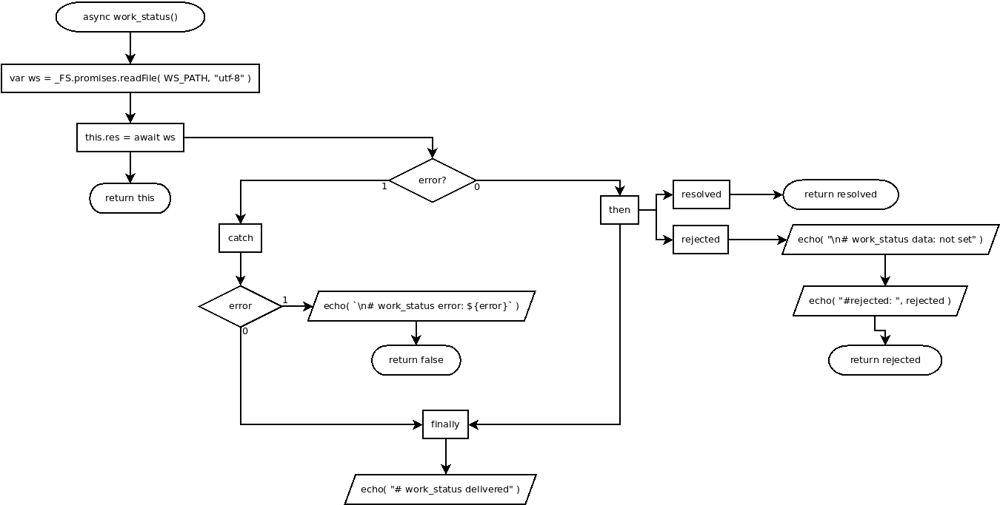

async work_status()
Flowchart

Code
async work_status(){
/*************************+**/
/* To operate work_status file */
/**************************+*/
//var WS_PATH = "/home/bisnis/node/system/work_status";
var ws = _FS.promises.readFile( WS_PATH, "utf-8" );
this.res = await ws
.then(
async ( resolved )=>{ return resolved },
async ( rejected )=>{
echo( "\n# work_status data: not set" );
echo( "#rejected: ", rejected );
return rejected;
}
)
.catch( async ( error )=> {
if( error ){
echo( `\n# work_status error: ${error}` );
return false;
}
} )
.finally(
async function(){
echo( "# work_status delivered" );
}.bind(this)
)
return this;
}